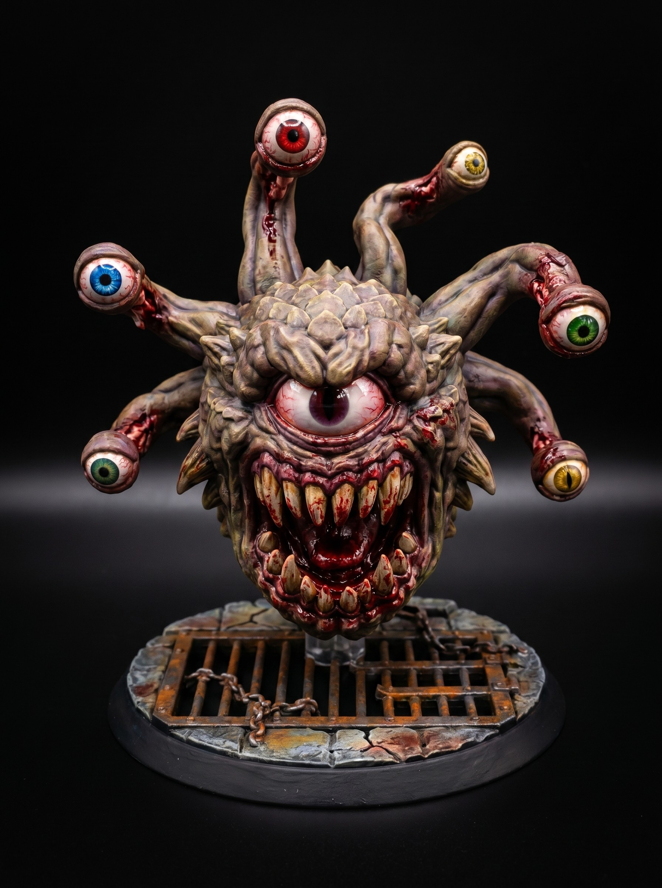

Tomb Sentinel Heavy Knight Miniature STL
August 21, 2026

The Tomb Sentinels do not breathe. Ancient oaths bind their souls to sixty pounds of cold-forged iron. They guard the crypts beneath the broken empire. Trespassers find only silence until the first greatsword falls.
Rust eats at their plates, but blood magic holds the seams together. They feel no pain, fear, or fatigue. You cannot parley with an empty suit of armor. They strike until the target stops moving or their steel shatters.
Most adventuring parties clear these halls by running past them. Engaging a Sentinel in a narrow corridor is suicide. If you hear iron grinding on stone in the dark, draw your weapon and make peace with your gods.
Get free miniatures:
- Fantasy: https://cults3d.com/@BattleFoundry
- Scifi: https://cults3d.com/@BATTLEFOUNDRYSCIFI
- Grimdark: https://cults3d.com/@DREADWORKS
- Resin Statue: https://cults3d.com/@BlacksiteSyndicate